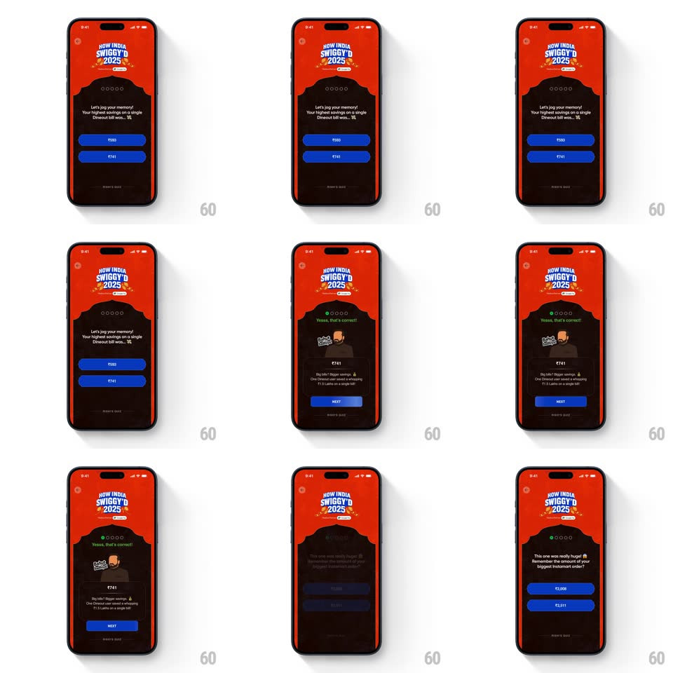

Media
Frame-by-frame

Rebuild this animation 1:1: Swiggy's "How India Swiggy'd 2025" correct-answer celebration - the quiz flips to the dark success panel with a springy mascot, confetti, staggered text, and a blob-wipe into the next question.

Rebuild this animation 1:1: Swiggy's "How India Swiggy'd 2025" correct-answer celebration - the quiz flips to the dark success panel with a springy mascot, confetti, staggered text, and a blob-wipe into the next question.
## Integration
Integration: stack-agnostic spec - springs given as stiffness/damping, timed motions as duration + curve; map every value to your framework and animation library of choice.
## Scene
The quiz screen, Swiggy red: "HOW INDIA SWIGGY'D 2025" badge, progress dots, the question ("Let's jog your memory! Your highest savings on a single Dineout bill was...") with two blue answer pills (₹592 / ₹741). Success state: a dark panel with "Yesss, that's correct!" in green, a mascot illustration (man at a desk), the correct amount ₹741, a fun-fact line, and a blue NEXT button. Transition: a blue blob wipe leads to the next question.
## Motion spec
Pattern: correct-answer celebration with springy mascot, confetti, and staggered reveals.
- On the right tap, the pill flashes green (150ms) and the panel crossfades to the dark success state (300ms, content dropping 16px).
- "Yesss, that's correct!" pops in green (scale 0.9 -> 1, spring ~400/14) as confetti bursts from the top corners (~16 pieces, drifting down with rotation over 1s).
- The mascot springs up (translateY 40 -> 0, spring ~350/12, ~450ms, one overshoot wobble) 150ms later.
- The correct amount and fun-fact line fade up staggered (200ms, then 150ms), then NEXT fills blue and rises (250ms).
- Tapping NEXT fires the transition: a blue blob expands from the center-bottom (scale 0 -> covering, 350ms ease-in) and the next question's red screen reveals as the blob contracts away (300ms).
## Calibration
- Green flash on the pill first, panel change second - the user sees their own answer confirmed before the layout moves.
- The blob wipe is organic (rounded, expanding shape) - not a rectangle slide.
## Reduced motion
Crossfade to the success panel (250ms); next question crossfades without the blob.
## Don't miss
- The fun fact carries the real stat (the ₹1.5 Lakhs single-bill record) - it's the reward content.
- Progress dots advance on the success state, before NEXT is tapped.